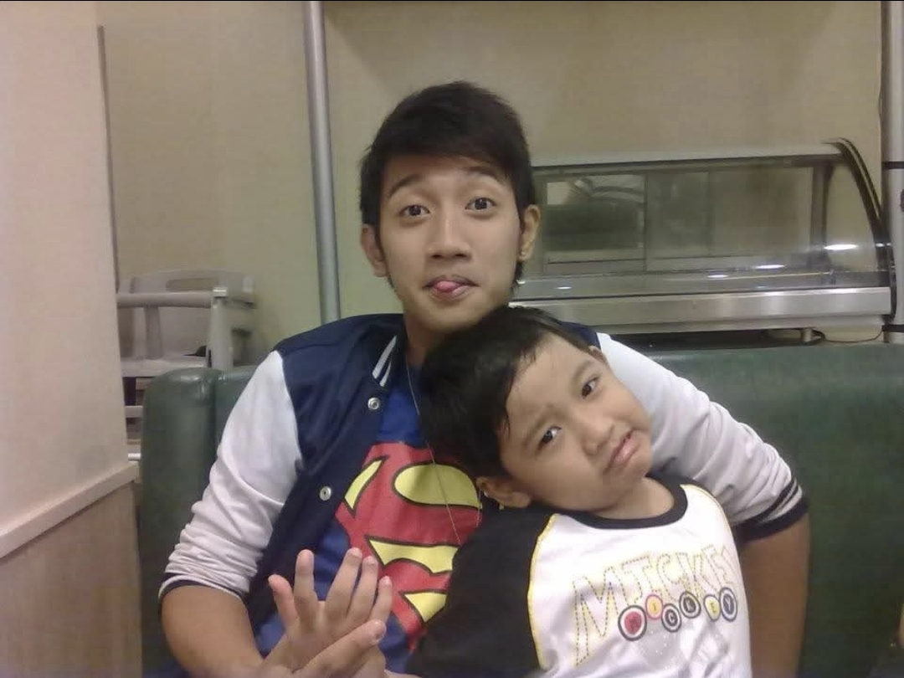
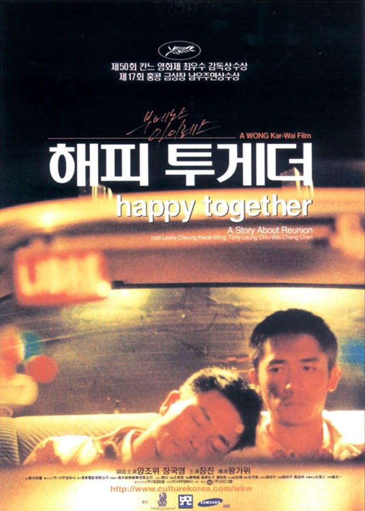
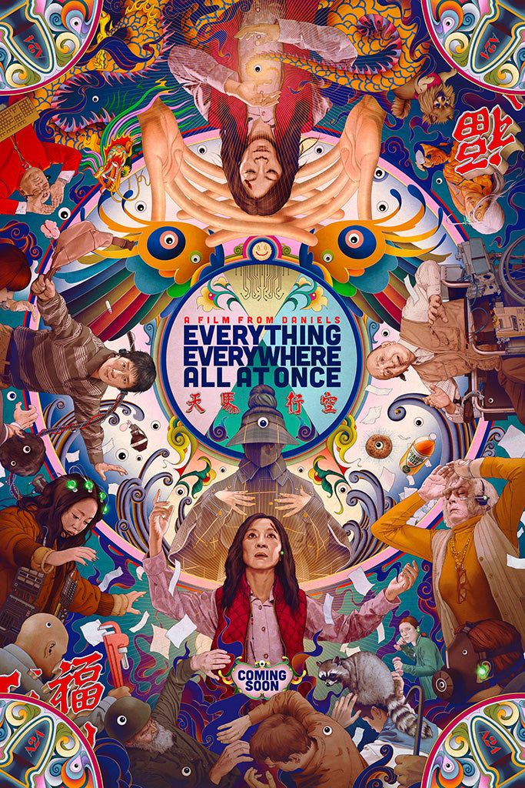
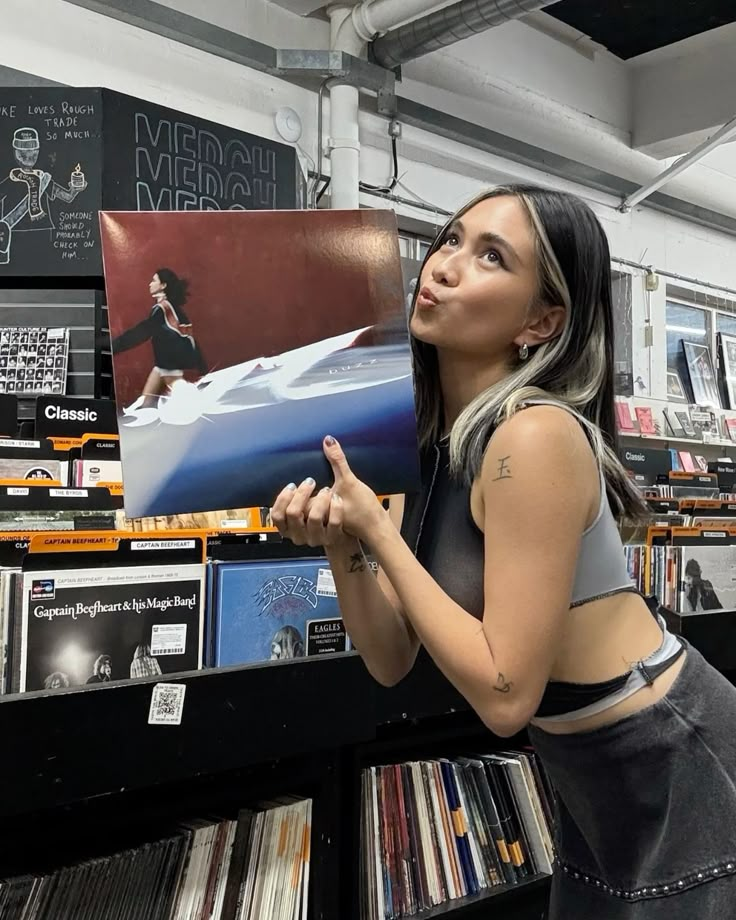
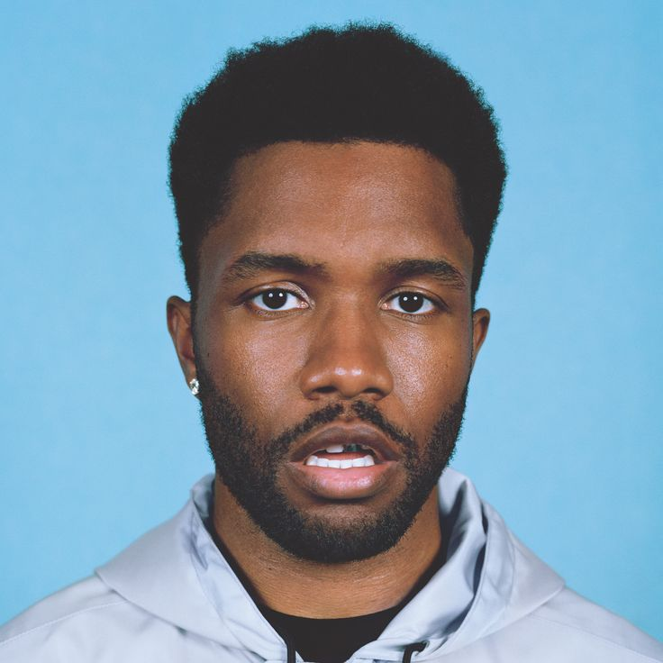
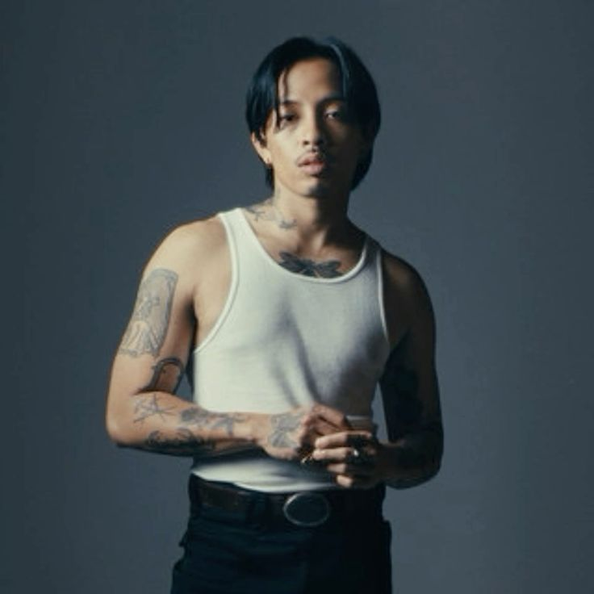

About Me!
I am Dan, an 18 year-old freshman studying BSCS at Pamantasan ng Lungsod ng Maynila. I was born on January 18, 2007 and currently reside in Manila City. I graduated Senior High School and High School from the Polytechnic University of the Philippines, Mabini Campus.
Why Computer Science?
Ever since I was a kid, I was already interested in video games thanks to my older brother who was a big addict as well! I have always been interested in how such applications work, even having the dream to create my own game someday. Choosing computer science felt like the right path for me as it is the most aligned with my interests regarding Game and Web Development.
Now, with the rapid advancement of AI, I am even more excited to learn and dive deep into the world of coding to create and develop not only technological solutions, but also creative games and projects!
Academic Background
Unfortunately, due to the budget cuts made to SUCs in 2023, I was not able to pursue Informations and Communications Technology (ICT) as my strand in Senior High. Instead, I pursued Science, Technology, Engineering, and Mathematics (STEM) in the Polytechnic University of the Philippines wherein I graduated with flying colors.
During my time in high school, I thoroughly enjoyed our IT Fundamentals (ITF) subject in ninth grade, which made me more passionate to pursue a tech oriented course such as BS in Information Technology, BS in Cybersecurity, BS in Information Systems, and even Computer Engineering! But ultimately, I decided with CS.
Personal Interests
Outside of tech, I am also a big fan of writing, watching movies, and listening to music! Here are some of my favorite movies:
- 
Happy Together (1997) - 
Everything Everywhere All At Once (2022) -
Portrait Of A Lady On Fire (2019) -
Dekada 70s (2002) -

Tangled (2010)
Here are some of my favorite music artists:
- 
Niki Zefanya - 
Frank Ocean -
Faye Webster - 
Rini -
Kali Uchis
Career Goals
In 5 years, I see myself as a secured Web Developer that creates practical solutions to real-world problems. Additionally, I see myself dabbling in my passion of Game Development, AI and Machine Learning, and Cloud Engineering. I look forward to reaching my fullest potential, project by project.
Hopefully, you'll get to witness this journey with me.